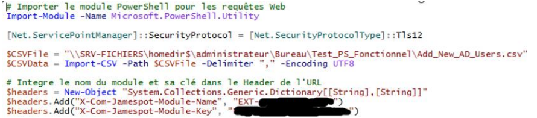
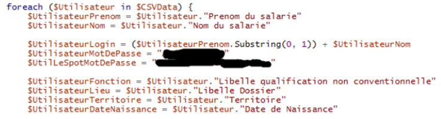
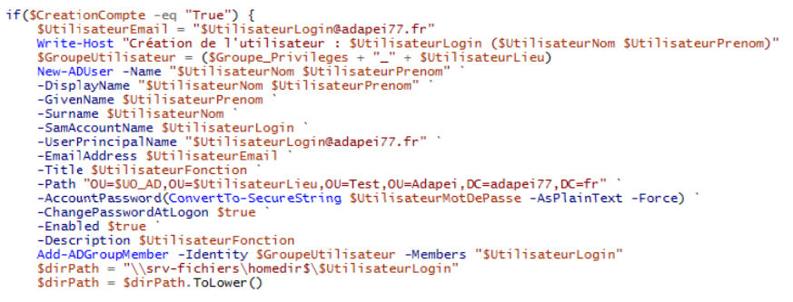
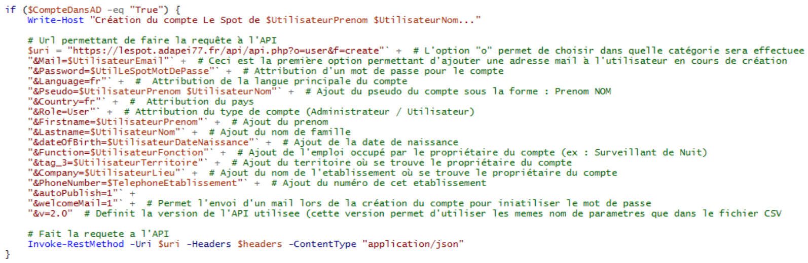
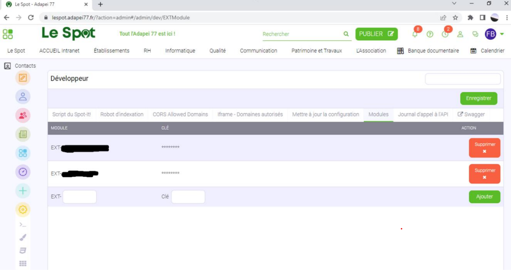

J’ai contribué à la création d'un script PowerShell qui permet de créer des comptes utilisateurs sur un serveur Active Directory ainsi que sur le Jamespot de l’association via un API. Ce script a automatisé la création des comptes et a facilité la gestion des utilisateurs au sein de l'association.
L’extrait ci-dessus permet de récupérer les informations du fichier CSV créer précédemment via le script Excell et de créer une variable contenant les informations de connexions nécessaires pour l’utilisation de l’API de Jamespot.
L’extrait ci-dessus est une boucle permettant de récupérer les informations importantes de chaque ligne du fichier CSV pour les ajouter dans des variables qui seront ensuite réutilisées lors de la création des comptes Active Directory comme nous pouvons le voir ci-dessous :
A cette étape on doit simplement répondre par « y » pour indiquer que l’on a conscience des risques et que l’on souhaite débuter le clonage.
Enfin, nous pouvons ci-dessus la manière dont les requêtes de création de compte sont envoyées à l’API de Jamespot.
Tout d’abord, une variable contenant l’url de l’API ainsi que toutes les options de créations de compte est créer pour ensuite être réutiliser dans la commande « Invoke-RestMethod » tout en y ajoutant le contenu de la variable créer au début du script contenant les informations de connexion à l’API ajouté dans l’entête de la requête HTTPS.
Un environnement a été créer sur le serveur AD de l’association pour tester le script de création de compte utilisateur AD. Cet environnement contient des Unités d’Organisation étant organisées d’une manière similaire à l’environnement de production de l’Adapei77
Ci-dessus nous pouvons voir un exemple de requête de création de compte reçu par l’API de Jamespot
L’image ci-dessus correspond à la page où se trouve les modules permettant de se connecter à l’API, pour la création des comptes j’ai donc dû créer un nouveau module qui est le deuxième visible pour lequel j’ai dû également créer une clé permettant d’y faire des requêtes. (Cela correspond donc aux informations ajouter dans la variable « header » au début du script PowerShell).